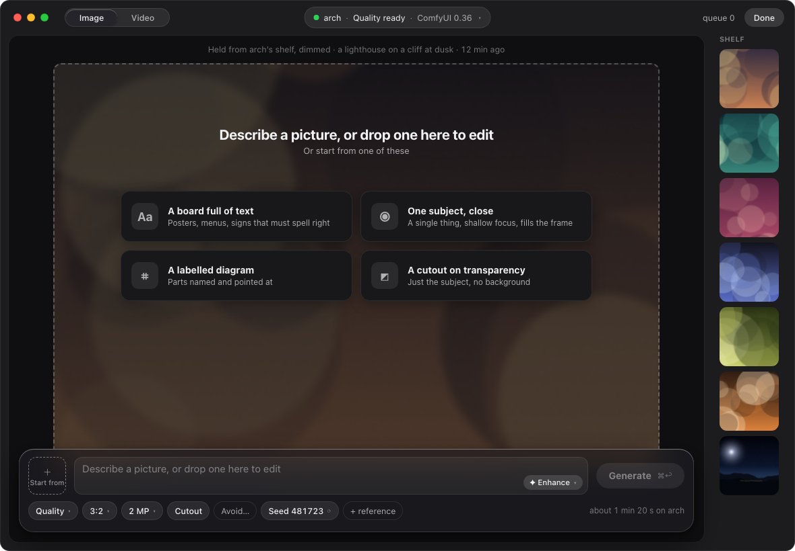
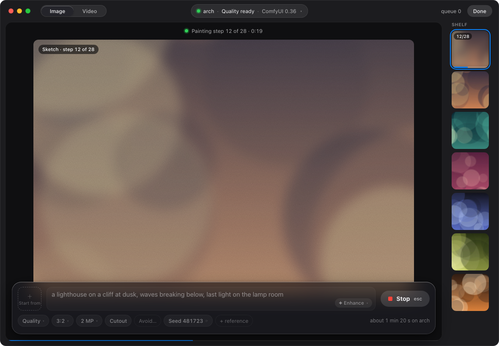
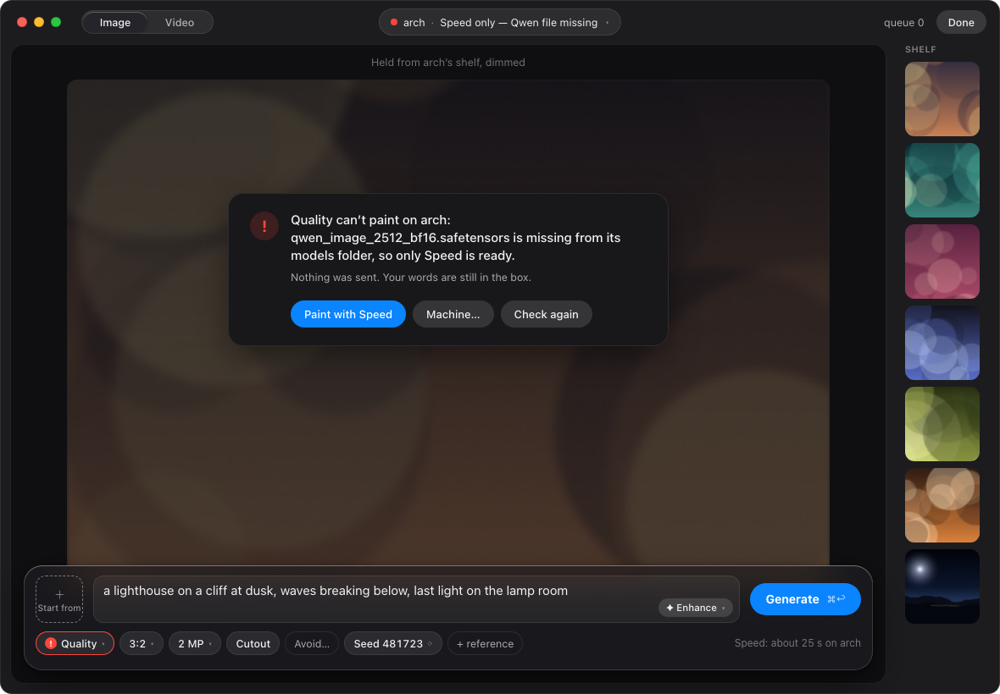
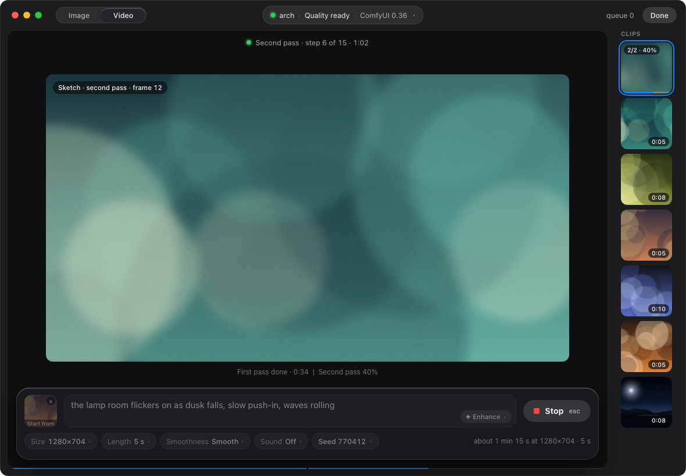
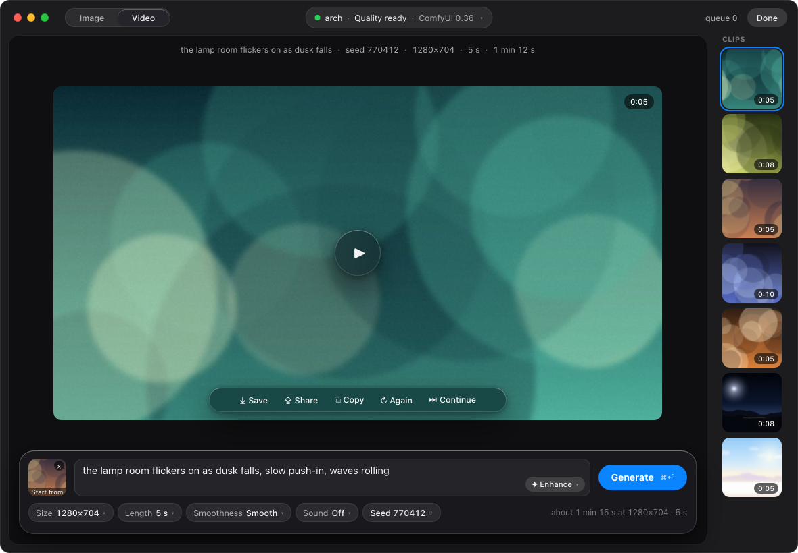

b-emptyEmpty: stage holds the dimmed newest picture behind four starter ideas; Generate disabled until words exist.
b-paintingPainting: sketch fills the stage, “Sketch · step 12 of 28”, progress line, Stop in the dock, job tile leads the rail. b-doneDone: finished picture, verbs capsule, glass dock at the foot, shelf as a rail (dark).
b-doneDone: finished picture, verbs capsule, glass dock at the foot, shelf as a rail (dark).
b-failedFailed: a Qwen file is missing — one sentence, the remedy, danger tone held perfectly still.
b-video-runningVideo lane running: segmented two-pass progress, sketch frame, Size/Length/Smoothness/Sound/Seed, start-from slot.
b-video-doneVideo lane done: poster, play affordance, duration badges in the shelf.